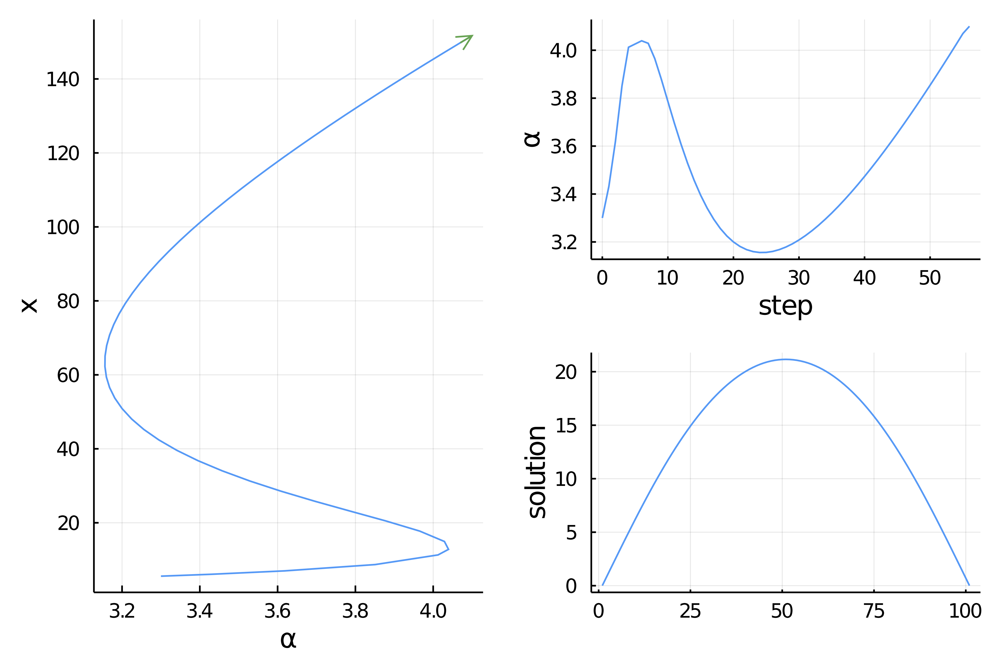

Temperature model with ApproxFun, no AbstractArray (intermediate)
We reconsider the example Temperature model (Simplest example) by relying on the package ApproxFun.jl which allows very precise function approximation. This is an interesting example because we have to change the scalar product of PALC for the method to work well.
This is one example where the state space, the space of solutions to the nonlinear equation, is not a subtype of
AbstractArray. See Requested methods for Custom State for more informations.
Code for custom state
We start with some imports:
using ApproxFun, LinearAlgebra, Parameters, Setfield
using BifurcationKit, Plots
const BK = BifurcationKitWe then need to add some methods not available in ApproxFun because the state space is not a subtype of AbstractArray:
# specific methods for ApproxFun
import Base: eltype, similar, copyto!, length
import LinearAlgebra: mul!, rmul!, axpy!, axpby!, dot, norm
similar(x::ApproxFun.Fun, T) = (copy(x))
similar(x::ApproxFun.Fun) = copy(x)
mul!(w::ApproxFun.Fun, v::ApproxFun.Fun, α) = (w .= α * v)
eltype(x::ApproxFun.Fun) = eltype(x.coefficients)
length(x::ApproxFun.Fun) = length(x.coefficients)
dot(x::ApproxFun.Fun, y::ApproxFun.Fun) = sum(x * y)
axpy!(a, x::ApproxFun.Fun, y::ApproxFun.Fun) = (y .= a * x + y)
axpby!(a::Float64, x::ApproxFun.Fun, b::Float64, y::ApproxFun.Fun) = (y .= a * x + b * y)
rmul!(y::ApproxFun.Fun, b::Float64) = (y.coefficients .*= b; y)
rmul!(y::ApproxFun.Fun, b::Bool) = b == true ? y : (y.coefficients .*= 0; y)
copyto!(x::ApproxFun.Fun, y::ApproxFun.Fun) = ( (x.coefficients = copy(y.coefficients);x))Problem formulation
We can easily write our functional with boundary conditions in a convenient manner using ApproxFun:
N(x; a = 0.5, b = 0.01) = 1 + (x + a*x^2)/(1 + b*x^2)
dN(x; a = 0.5, b = 0.01) = (1-b*x^2+2*a*x)/(1+b*x^2)^2
function F_chan(u, p)
@unpack α, β, Δ = p
return [Fun(u(0.), domain(u)) - β,
Fun(u(1.), domain(u)) - β,
Δ * u + α * N(u, b = β)]
end
function Jac_chan(u, p)
@unpack α, β, Δ = p
return [Evaluation(u.space, 0.),
Evaluation(u.space, 1.),
Δ + α * dN(u, b = β)]
endWe want to call a Newton solver. We first need an initial guess and the Laplacian operator:
sol = Fun(x -> x * (1-x), Interval(0.0, 1.0))
Δ = Derivative(sol.space, 2)
# set of parameters
par_af = (α = 3., β = 0.01, Δ = Δ)
prob = BifurcationProblem(F_chan, sol, par_af, (@lens _.α); J = Jac_chan, plotSolution = (x, p; kwargs...) -> plot!(x; label = "l = $(length(x))", kwargs...))Finally, we need to provide some parameters for the Newton iterations. This is done by calling
optnewton = NewtonPar(tol = 1e-12, verbose = true)We call the Newton solver:
out = @time BK.newton(prob, optnewton, normN = x -> norm(x, Inf64))and you should see
┌─────────────────────────────────────────────────────┐
│ Newton Iterations f(x) Linear Iterations │
├─────────────┐──────────────────────┐────────────────┤
│ 0 │ 1.5707e+00 │ 0 │
│ 1 │ 1.1546e-01 │ 1 │
│ 2 │ 8.0149e-04 │ 1 │
│ 3 │ 3.9038e-08 │ 1 │
│ 4 │ 7.9049e-13 │ 1 │
└─────────────┴──────-───────────────┴────────────────┘
0.103869 seconds (362.15 k allocations: 14.606 MiB)Continuation
We can also perform numerical continuation with respect to the parameter $\alpha$. Again, we need to provide some parameters for the continuation:
optcont = ContinuationPar(dsmin = 0.0001, dsmax = 0.05, ds= 0.005, pMax = 4.1, plotEveryStep = 10, newtonOptions = NewtonPar(tol = 1e-8, maxIter = 20, verbose = true), detectBifurcation = 0, maxSteps = 200)Then, we can call the continuation routine.
# we need a specific bordered linear solver
# we use the BorderingBLS one to rely on ApproxFun.\
br = continuation(prob, PALC(bls = BorderingBLS(solver = optnewton.linsolver, checkPrecision = false)), optcont,
plot = true,
plotSolution = (x, p; kwargs...) -> plot!(x; label = "l = $(length(x))", kwargs...),
verbosity = 2,
normC = x -> norm(x, Inf64))and you should see

However, if we do that, we'll see that it does not converge very well. The reason is that the default arc-length constraint (see Pseudo arclength continuation) is
\[N(x, p)=\frac{\theta}{\text { length}(x)}\left\langle x-x_{0}, d x_{0}\right\rangle+(1-\theta) \cdot\left(p-p_{0}\right) \cdot d p_{0}-d s=0\]
is tailored for vectors of fixed length. The $\frac{1}{length(x)}$ is added to properly balance the terms in the constraint. Thus, in BifurcationKit, the dot product is in fact (x,y) -> dot(x,y) / length(y).
But here, the vector space is provided with a custom dot product (see above) which depends on the domain, here Interval(0.0, 1.0). Hence, we want to change this constraint $N$ for the following:
\[N(x, p)={\theta}\left\langle x-x_{0}, d x_{0}\right\rangle+(1-\theta) \cdot\left(p-p_{0}\right) \cdot d p_{0}-d s=0.\]
This can be done as follows:
optcont = ContinuationPar(dsmin = 0.001, dsmax = 0.05, ds= 0.01, pMax = 4.1, plotEveryStep = 10, newtonOptions = NewtonPar(tol = 1e-8, maxIter = 20, verbose = true), maxSteps = 300, θ = 0.2, detectBifurcation = 0)
br = continuation(prob, PALC(bls=BorderingBLS(solver = optnewton.linsolver, checkPrecision = false)), optcont,
plot = true,
# specify the dot product used in PALC
dotPALC = BK.DotTheta(dot),
# we need a specific bordered linear solver
# we use the BorderingBLS one to rely on ApproxFun.\
linearAlgo = BorderingBLS(solver = DefaultLS(), checkPrecision = false),
plotSolution = (x, p; kwargs...) -> plot!(x; label = "l = $(length(x))", kwargs...),
verbosity = 2,
normC = x -> norm(x, Inf64))